Comparação visual com a versão anterior. Layout preservado, novo acabamento inspirado em Anime Expeditions. As imagens abaixo são capturas reais do Roblox Studio; celular em modo horizontal.
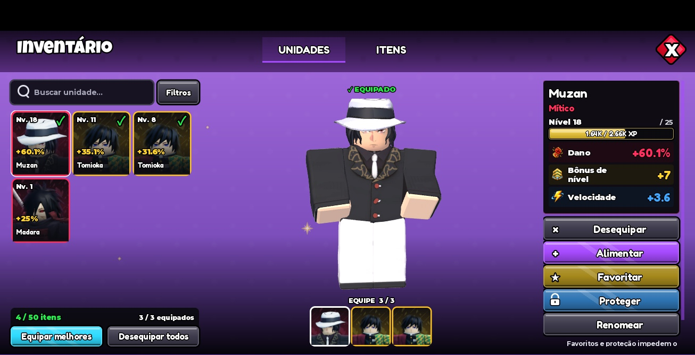
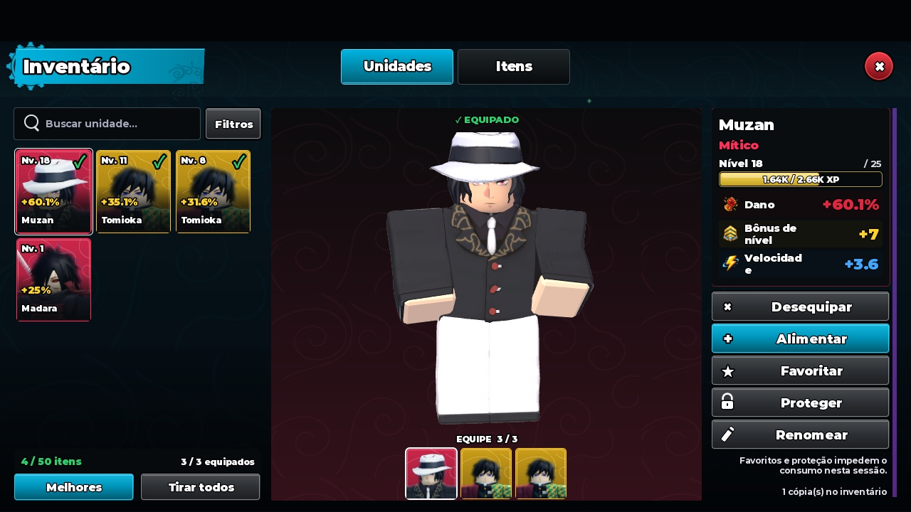
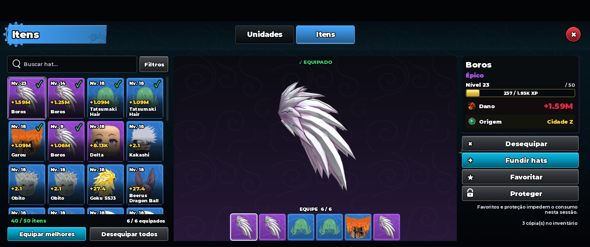
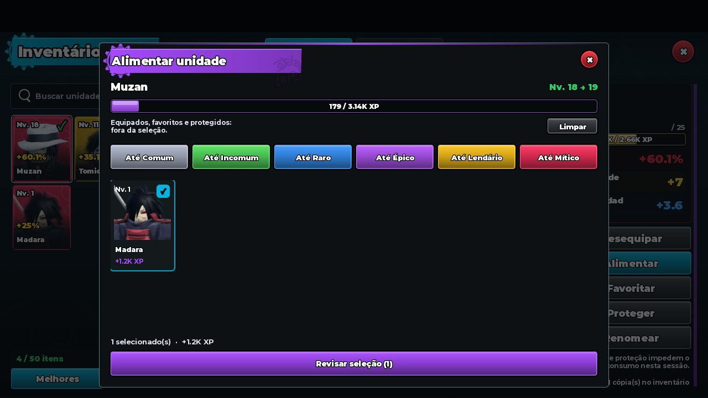
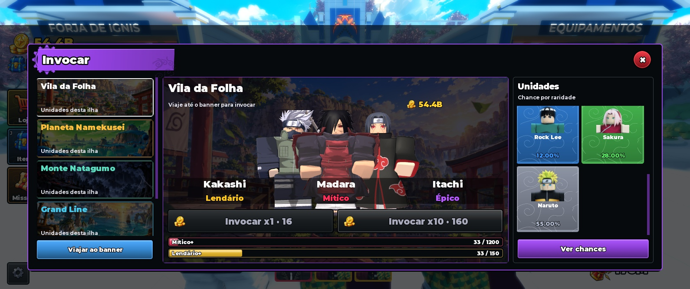
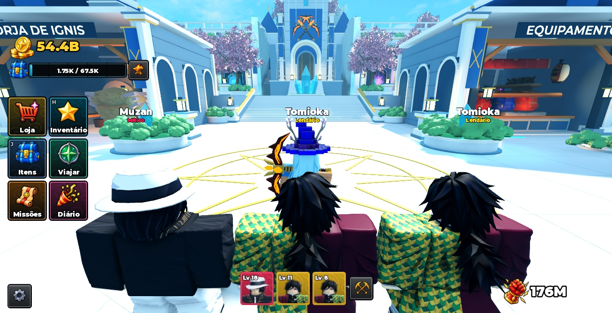
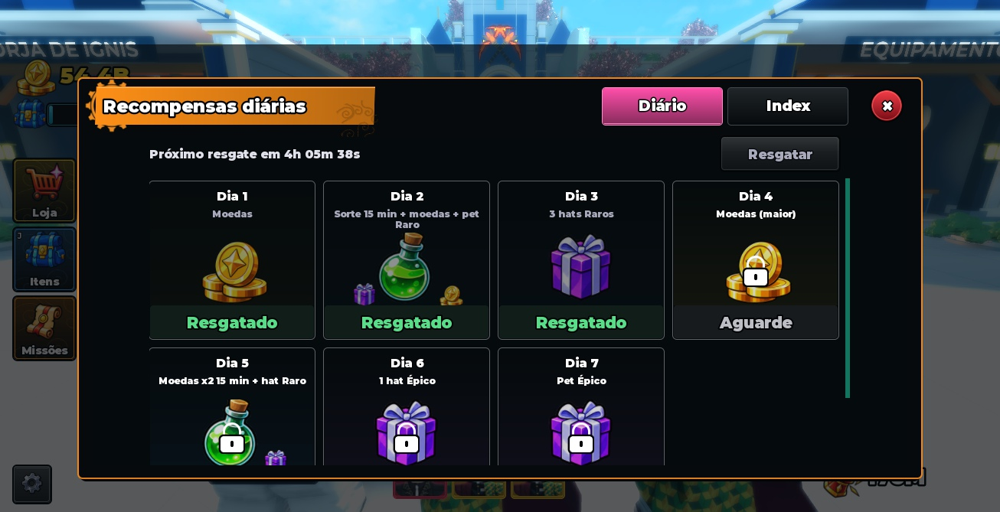
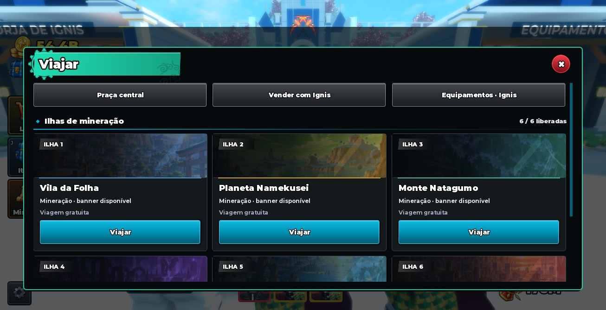
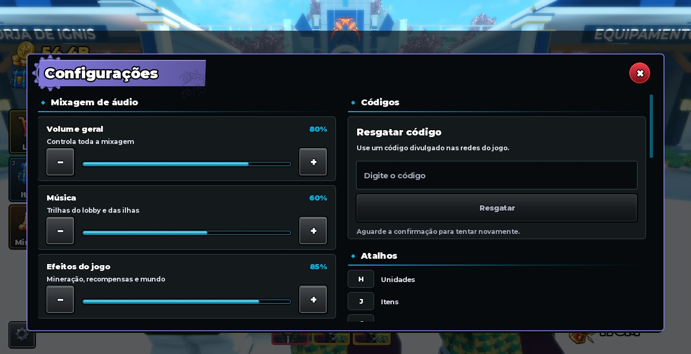
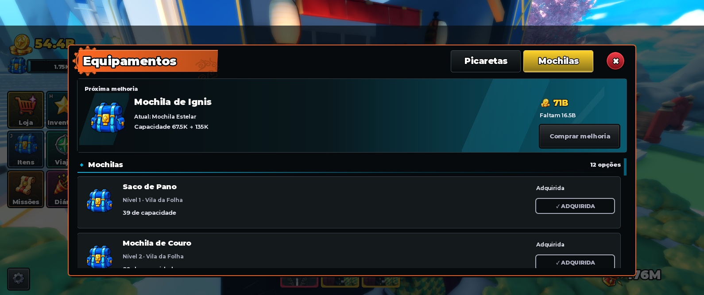
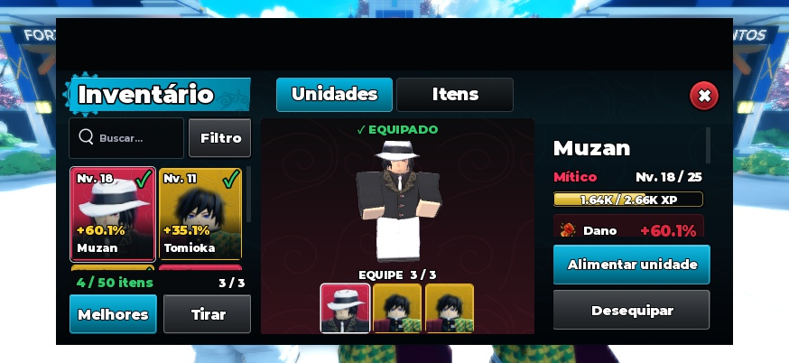
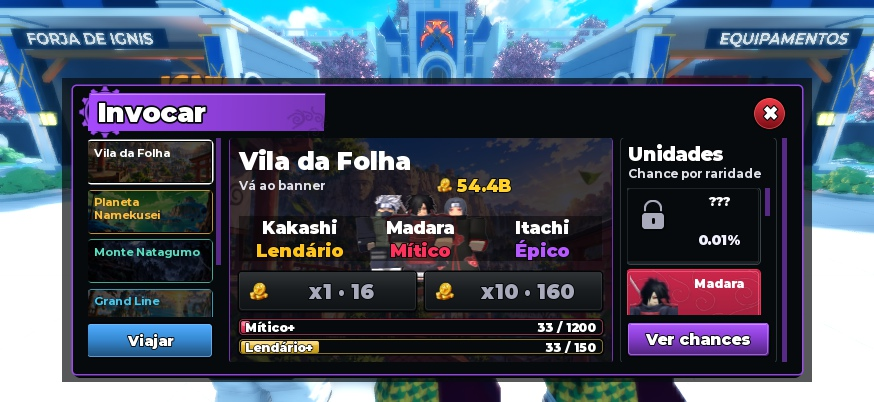
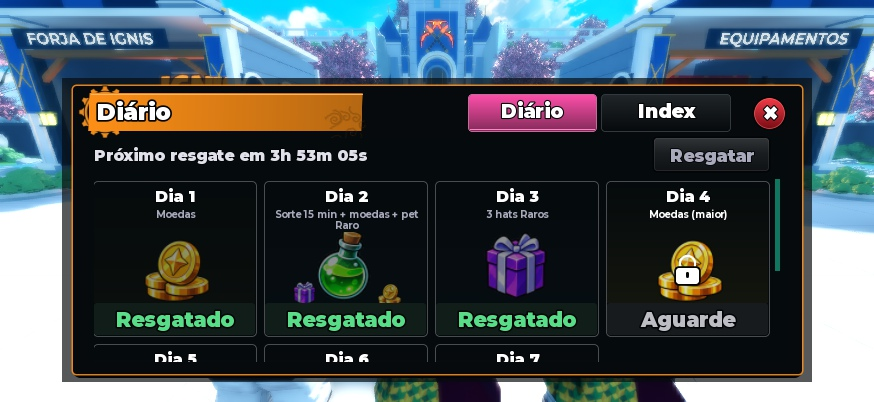